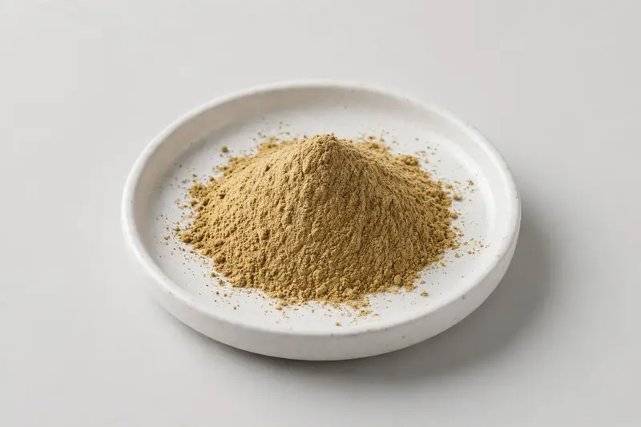

Katuki — Himalayan root herb for liver-positioned botanical formulations.

Overview
Katuki extract comes from the root of Picrorhiza kurroa, a Himalayan herb traditionally positioned around liver and digestive support in Ayurvedic practice. Overseas supplement brands request it for liver-positioned formulations, usually on picroside marker grades. We operate as a Xi'an trading company, sourcing through partner producers, and confirm specification, documentation and feasibility after receiving your target spec.
Specifications below reflect commonly requested options in the market — not a stock list. Share your target spec and we'll confirm exactly what we can supply, honestly.
| Specification | Details |
|---|---|
| Botanical identity | Katuki root extract powder |
| Source material | Root |
| Marker compound | Commonly requested spec grades: picroside I and picroside II standardized grades (e.g. 4% to 10% total picrosides); actual specs confirmed on inquiry. |
| Appearance | Light brown to yellowish-brown fine powder |
| Mesh size | Typically 80–100 mesh (confirm per inquiry) |
| Testing | COA/TDS arranged on request; scope agreed per your spec |
Applications
Documentation
We don't claim in-house labs or certifications we don't hold. COA and TDS documents can be arranged on request, and testing scope is agreed against your specification before supply.
FAQ
Related products
Rehmannia glutinosa
Key marker: 10:1 or catalpol
View specs →Camellia sinensis (pu-erh)
Key marker: Polyphenols / theabrownins
View specs →Arctium lappa
Key marker: 10:1 or inulin
View specs →Piper longum
Key marker: 95% Piperine
View specs →Terminalia chebula
Key marker: Tannin Grades
View specs →Send your target spec and volumes — we'll respond with a tailored quotation.
Request a Quote